mobile phones
i recently switched to a light phone III. here i will write about my experience doing so.
believe it or not, when i was younger i spent a huge amount of time on my phone. snapchat exploded in popularity when i was a teenager, and social media was a big part of my life. over time i started realizing how cringe a lot of my online behavior was, and i slowly began taking steps away from social media. unfortunately, big companies own a lot of the data connected to those platforms and in some cases it is ridiculously hard to get rid of it. that is only part of the reason why i am moving away from smartphones, though.
my reasons for switching to a dumb phone
- better privacy and security
- spending less time on my phone
- more meaningful conversations with friends and family
- a kind of dopamine detox
- i already have a computer that can do most of what a smartphone can
timeline
2010
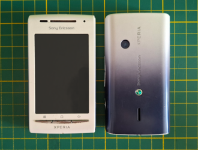

since i have been a developer since i was a kid, i have always been pro open-source and therefore also pro-Android. my first smartphone was an Android phone -- if i remember correctly it was a Sony Ericsson Xperia X8. i used that until, for a short period, i had an iPhone 3.
2012-2016
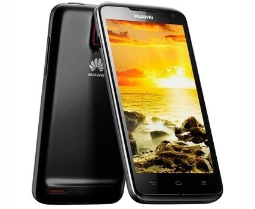
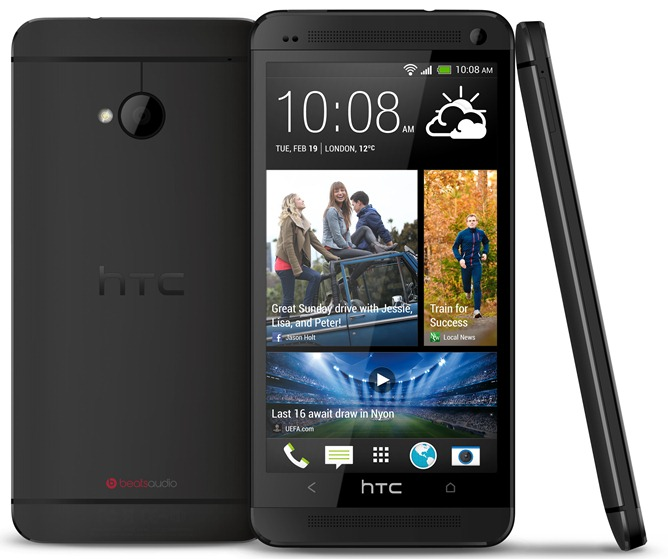
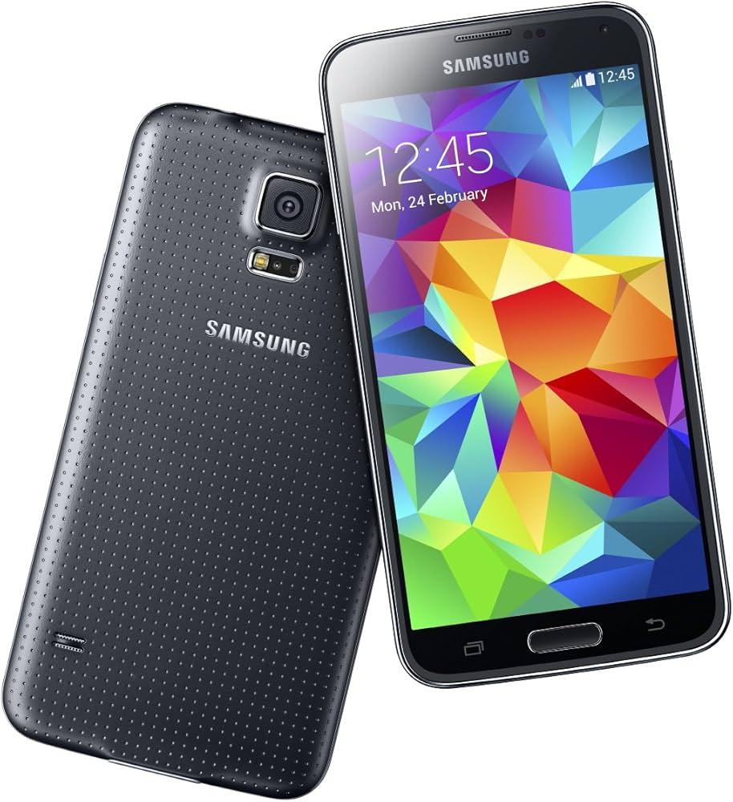
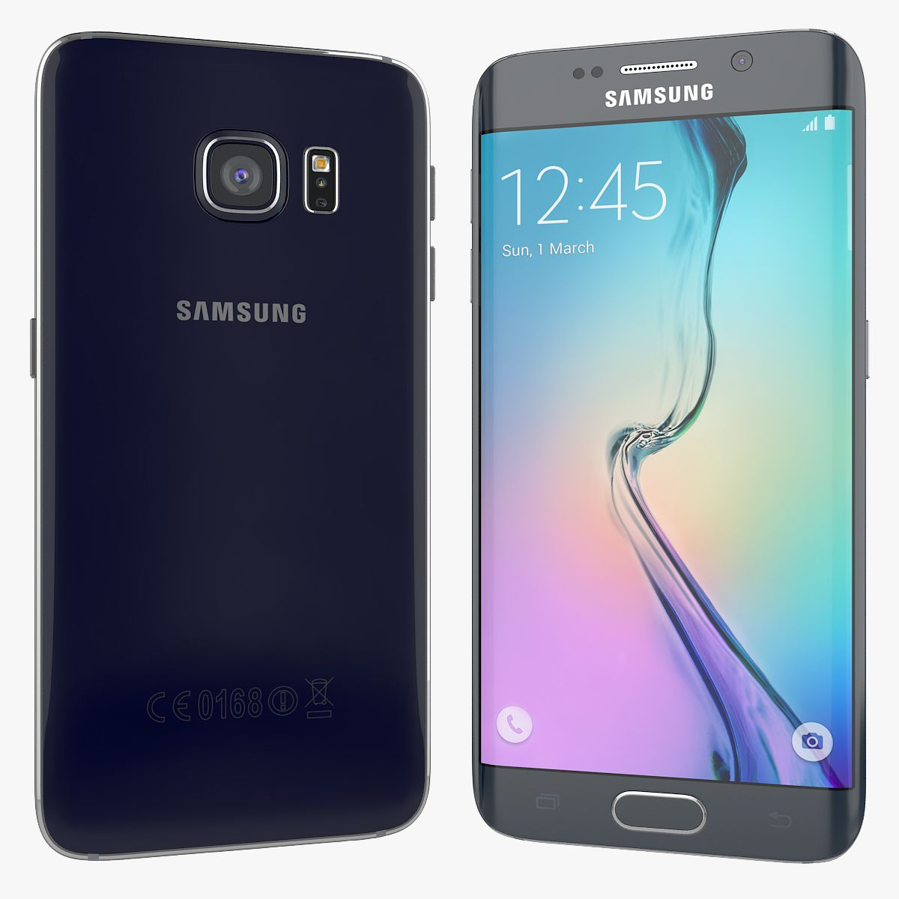
after that i switched back to Android. i had a Huawei phone, then moved to an HTC and later owned a few Samsung Galaxy phones.
2016-2025
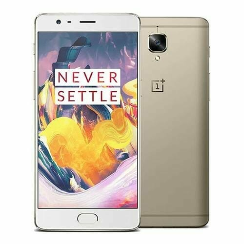
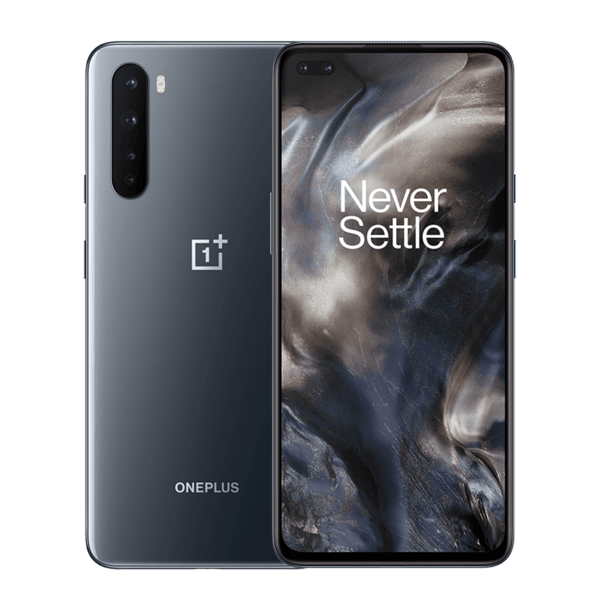
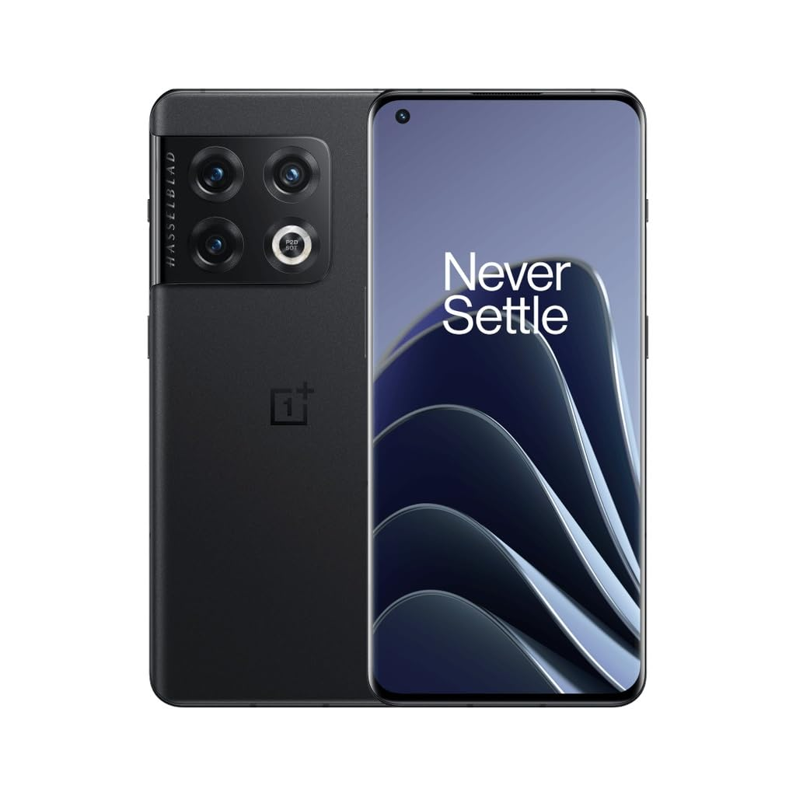
around 2016 i discovered OnePlus, and since then i mostly used their devices. i think i had three different OnePlus phones throughout this time period.
now
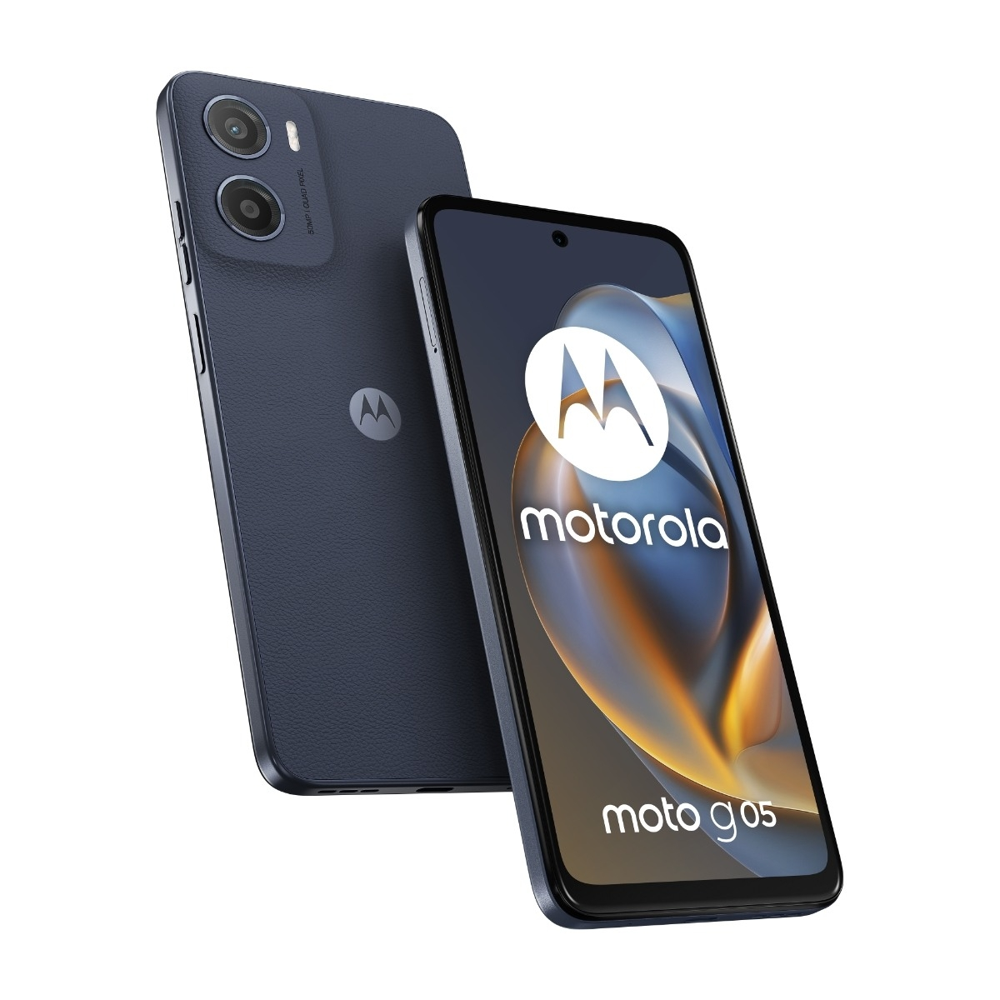
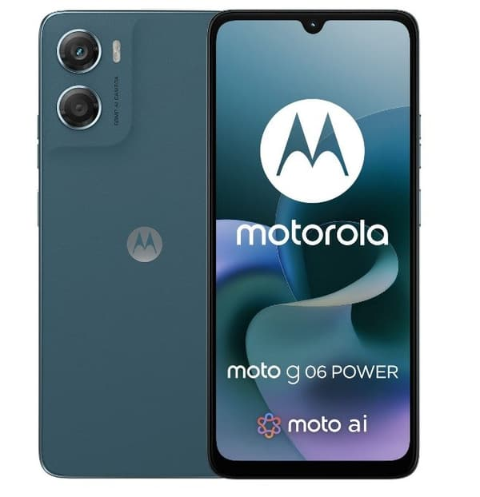
about a year ago i started transitioning into my “dumb phone” era. that is when i bought a Motorola G05. i accidentally threw it into a wall while sleeping, soon after buying it, so i had to replace it with a G06. that is what i am currently using for banking apps.
the light phone III
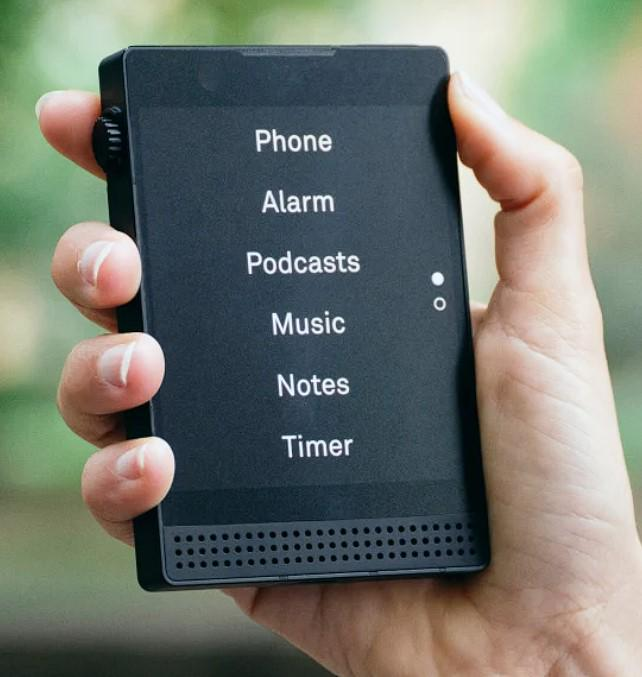
this page is in the making